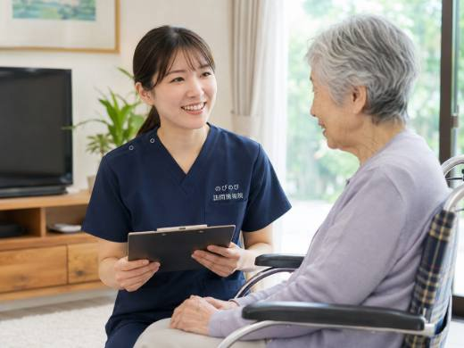

「訪問鍼灸マッサージを頼みたいけれど、何を用意すればいいのか」。ご家族から最初にいただく質問の多くがこれです。書類の名前を聞くと身構えてしまいますが、実際にそろえるものは限られています。基本は健康保険証と医師の同意書の二つ。あとは負担割合の分かるものや、介護保険を使っている方ならその証があると話が早く進みます。この記事では、何をどう用意するのか、申し込みから施術が始まるまでの流れを順にご案内します。
先に結論を書きます。ご用意いただく主なものは、健康保険証（マイナ保険証を含む）と、かかりつけ医師の同意書です。加えて自己負担の割合が分かるもの、介護保険証やお薬手帳があると手続きがなめらかになります。同意書は保険を使うための前提ですが、用紙の準備や医療機関とのやりとりは当院が段取りをお手伝いするので、ご家族が一から整える負担は小さくすみます。要介護認定は不要で、介護保険の限度額とも別枠です。相談だけなら費用はかかりません。
最初に確かめてほしいのは、健康保険証
訪問鍼灸マッサージを保険で受けるとき、いちばん最初に手元で確かめていただきたいのが健康保険証です。後期高齢者医療被保険者証をお持ちの方はそれ、お勤め先の保険や国民健康保険の方はその保険証で問題ありません。マイナンバーカードを保険証として使う形でもかまいません。名前や記号番号が読み取れる状態であれば、そこから話を進められます。
この施術は療養費という医療保険のしくみで行うもので、神経痛・リウマチ・頸肩腕症候群・五十肩・腰痛症・頸椎捻挫後遺症といった慢性的な症状が対象になります。まずは保険証があるかどうか。準備の出発点はそこだけです。あとの書類は、その方の状況をうかがいながら一つずつ確かめていけば足ります。
負担割合が分かる証も、あわせて手元に
施術費のうちご自身で払う割合は、加入している保険や年齢によって変わります。後期高齢者医療被保険者証などには負担割合が記載されているので、その証をお見せいただけると、費用の見通しをお伝えしやすくなります。1回の施術は総額3,950円で、自己負担は1割の方でおよそ395円が目安です。
割合がすぐに分からなくても心配は要りません。お手元の証をそのまま見せていただければ、こちらで確認します。ここで大事なのは、完璧にそろえてから連絡する必要はない、ということです。
公費の受給者証やお薬手帳は、あると話がなめらか
必須ではないものの、あると手続きがスムーズになる書類があります。障害や難病などの公費負担医療を受けている方は、その受給者証があれば負担のしくみに合わせて進められます。持病やお薬がある方、体内に医療機器が入っている方は、お薬手帳など内容の分かるものを近くに置いておくと安心です。
これらは初回までに全部そろえておかなくても大丈夫です。分かる範囲でかまいませんし、当日にお見せいただく形でも構いません。体の状態やお薬のことは、施術を無理なく続けるための参考になります。思い当たるものがあれば教えていただける、くらいの気持ちで十分です。
医師の同意書は、当院が書式を用意して段取りします
保険を使ううえで欠かせないのが、かかりつけの医師が書く同意書です。書類の名前を聞くと身構えてしまう方が多いのですが、ご家族がゼロから作るものではありません。当院で用紙をご用意し、医師へのお願いのしかたや医療機関とのやりとりの段取りを進めます。どの科に頼めばよいか分からない、通院先が決まっていない、そんな段階でも一緒に整理していけます。詳しくは医師の同意書とは？取得の流れと注意点にまとめていますので、あわせてご覧ください。
同意書があれば、要介護認定を受けているかどうかは問われません。介護保険のサービスを使っていない方でも、慢性的な痛みなどについて医師が施術を必要と認め、通院がむずかしい状態であれば対象になります。なお、同じ部位について医療保険のリハビリを受けている場合、鍼灸との同時算定はできません。この点も、状況をうかがったうえでご案内します。
印鑑や余分な準備は、基本的に要りません
「印鑑はいるのか」とよく尋ねられますが、申し込みの段階では基本的に不要です。口座振替の手続きなど、必要になる場面があればそのつどご案内します。あらかじめ用意しておくものは、そう多くありません。
施術には、体を動かしにくくなった方への機能訓練も含まれます。これは施術の中に入るもので、別に何かを申し込む必要はありません。これらについて別途の料金はいただきません。ただ、鍼やお灸、マッサージは病気そのものを治すものではなく、つらさをやわらげ、日々の動きを保つことを目指すものです。効き方には個人差があります。この点は正直にお伝えしておきたいところです。
生活保護を受けている方は、まず担当の方へ
生活保護を受けている方の場合は、施術費が医療扶助の扱いになります。この場合は保険証ではなく、医療扶助の手続きが必要になるので、まずは担当のケースワーカーにご相談ください。話が分かりにくければ、こちらから流れをお伝えすることもできます。
「これだけそろえれば絶対に大丈夫」と言い切りにくいのは、こうしたケースがあるからです。加入している保険や公費の種類によって、必要な書類は少しずつ変わります。そのため、まずはお手元にあるものを見せていただくところから始めるのがいちばん確実です。
そろわなくても、相談から始められます
あらためて費用の目安をお伝えします。1回の施術は総額3,950円。1割負担の方はおよそ395円で、週2回のペースならひと月の自己負担はおよそ3,160円ほどになります。この費用は医療保険で計算するため、介護保険の区分支給限度額とは別枠です。介護のサービスをいっぱいまで使っている方でも、その枠とは別に併用できます。
書類の名前を並べると多く感じるかもしれませんが、ご家族が一人で医療機関を回って整える場面はほとんどありません。お願いするのは、手元の保険証を確かめることと、通院先を教えていただくことが中心です。保険証が見当たらない、何が使えるか分からない、そんな段階でも構いません。何が足りないかをこちらで確認し、そろえ方を一つずつご案内します。申し込みから施術開始までの流れはお問い合わせから施術開始までの流れにまとめていますので、順番を知りたい方はそちらをどうぞ。まずは相談から、その方のペースで進めていきましょう。
よくある質問
申し込みに必要なものは何ですか？
主に、健康保険証（マイナ保険証を含む）と、医師の同意書の二つです。加えて、自己負担の割合が分かるものや、公費の医療証をお持ちの方はその証があると手続きが早く進みます。まずは手元の保険証を確認するところから始めてください。
同意書は自分で医師に頼むのですか？
用紙の準備や、医師へのお願いのしかた、医療機関とのやりとりの段取りは当院が引き受けます。ご本人やご家族だけで抱える必要はありません。通院先が決まっていない場合も、状況をうかがって一緒に整理します。
要介護認定を受けていないと利用できませんか？
いいえ、要介護認定は必要ありません。訪問鍼灸マッサージは医療保険のサービスなので、介護保険の認定を受けているかどうかは関係なく、医師が施術を必要と認め通院がむずかしい状態であれば受けられます。
マイナンバーカードの保険証でも大丈夫ですか？
はい、マイナンバーカードの保険証利用にも対応できます。従来の保険証をお持ちの場合はそちらでも問題ありません。どちらでも申し込みは進められますので、お手元にあるものをご用意ください。
介護保険の限度額を使ってしまいますか？
使いません。訪問鍼灸マッサージの費用は医療保険で計算し、介護保険の区分支給限度額とは別枠です。すでに介護保険のサービスをいっぱいまで使っている方でも、その枠とは別に利用できます。
書類がそろっていなくても相談できますか？
はい。全部そろっていなくても、まずは相談から始められます。お手元の書類をそのまま見せていただければ、何が使えて何が足りないかを確認し、足りないものはそろえ方をご案内します。相談だけなら費用はかかりません。
お薬手帳や介護保険証は必ず要りますか？
必須ではありませんが、あると役立ちます。持病やお薬、体内の医療機器がある方はお薬手帳など内容の分かるものを、介護保険を使っている方はケアマネジャーの連絡先が分かると、情報の共有がしやすくなります。当日にお見せいただく形でも大丈夫です。
費用はどのくらい、どう支払いますか？
1回の施術は総額3,950円で、1割の方はおよそ395円が目安です。別途の出張費はかからず、エリア内は同額。お支払いは月ごとにまとめてで、その月の施術内容が分かる明細をお渡しします。内訳はあとからでも確認できます。

引っ越し・保険証が変わったときの手続きは？｜訪問鍼灸マッサージを続けるために
続きを読む
初めての方へ｜訪問鍼灸マッサージの申し込みから施術までの流れ
続きを読む
生活保護を受けている方が訪問鍼灸マッサージを受けるには｜医療扶助での受け方とケースワーカー相談の流れ
続きを読む
訪問鍼灸マッサージ、当日の準備と立ち会いは？｜はじめての方へ
続きを読む
訪問鍼灸マッサージの同意書は何か月で更新？有効期間と、続けるための手続き
続きを読む